nightdater <- function (colIn) {
nightdate <- as.Date(trunc(colIn - ifelse(lubridate::hour(colIn) < 8, 86400, 0), by = "days"))
return(nightdate)
}Data Description/Exploration
1 Helper Functions
The nightdater function created rounds early-morning datetimes back to the previous night, creating a night of date. For example, a bird tagged at 23:00 on July 15 and a bird tagged at 3:00 on July 16 would both be considered tagged on the night of July 15
2 Weather Data
Our weather data from 2025 was collected via Kestrel 5500 weather meters. We had one on Gull Island, one on Great Island, and one on Baccalieu Island. We had persistent problems with the wind-measuring propellers breaking or getting jammed, so our record for wind data in particular is incomplete. One goal is to compare the island weather data with publicly available weather data from St. John’s International Airport to assess whether airport data can replace missing island-level measurements.
| Island | Latitude | Longitude | Kestrel Marked Coordinates | Notes |
|---|---|---|---|---|
| Gull Island | 47.2600 | -52.7757 | N47 15.6, W52 46.54 | Kestrel location |
| Great Island | 47.1877 | -52.8172 | N47 11.26, W52 49.03 | Same location as light meter |
| Baccalieu Island | 48.1220 | -52.7982 | N48 7.32, W52 47.89 | Same location as light meter |
2.1 Standardization of Units for Comparison
In order for proper comparison to occur some values will have to be converted to different units due to differences in standards established by the lab for the Kestrel 5500 and the St. John’s International Airport. From here on out, the standard is as follows.
| Variable | Unit |
|---|---|
datetime |
YYYY-MM-DD hh:mm:ss |
temperature |
°C |
station_pressure |
kPa |
barometric_pressure |
kPa |
wind_speed |
km/h |
wind_chill |
°C |
relative_humidity |
% |
dew_point |
°C |
2.2 Kestrel Import Function
Read in the data so the date and time readings are datetime objects and in Newfoundland time.
The Gull Island and Great Island kestrels had long periods where their wind impellers were broken. We also typically turned the kestrels on before they were deployed and did not turn them off until several days after retrieval, so I will trim the data to remove the extra days, and replace the ‘0’ wind speed with NA where the impellers were broken.
read_kestrel_weather = function(file, island, start_date, end_date, wind_all_missing = FALSE, wind_missing_after = NULL) {
kestrel_weather = read_csv(file, show_col_types = FALSE) %>%
mutate(
datetime = as_datetime(Time, format = "%m/%d/%Y %H:%M"),
datetime = force_tz(datetime, tzone = "America/St_Johns")
) %>%
filter(datetime >= ymd(start_date, tz = "America/St_Johns"),
datetime <= ymd(end_date, tz = "America/St_Johns"))
if(wind_all_missing) {
kestrel_weather = kestrel_weather %>%
mutate(`Wind Speed` = NA_real_)
}
if(!is.null(wind_missing_after)) {
kestrel_weather = kestrel_weather %>%
mutate(`Wind Speed` = if_else(datetime > ymd(wind_missing_after), NA_real_, `Wind Speed`))
}
kestrel_weather %>%
transmute(
datetime,
temperature = Temp,
station_pressure = `Station P.` / 10,
barometric_pressure = Baro. / 10,
wind_speed = `Wind Speed` * 3.6,
wind_chill = `Wind Chill`,
relative_humidity = `Rel. Hum.`,
dew_point = `Dew Point`,
weather_station_location = island
)
}2.3 Read in Kestrel data
baccalieu_weather = read_kestrel_weather(
file = "data/baccalieu_2025_weather.csv",
island = "Baccalieu Island",
start_date = "2025-06-10",
end_date = "2025-10-21"
)
gull_weather = read_kestrel_weather(
file = "data/gull_2025_weather.csv",
island = "Gull Island",
start_date = "2025-06-16",
end_date = "2025-10-29",
wind_all_missing = TRUE
)
great_weather = read_kestrel_weather(
file = "data/great_2025_weather.csv",
island = "Great Island",
start_date = "2025-06-23",
end_date = "2025-09-05",
wind_missing_after = "2025-07-19"
)3 Light Data
Our light meters are Unihedron SQM-LU-DL (Sky Quality Meter Lens USB DataLogger) light meters, made for measuring nighttime light pollution. They measure light in Magnitudes per Arcsecond Squared, which is an astronomical measurement; magnitudes relates to star brightness (the sun’s magnitude is -27, Sirius has a magnitude of -1, Polaris has a magnitude of 2). Arc-seconds relate to how the night sky is divided into minutes and seconds; a square arc-second is a one-second by one-second area of the sky. If you could divide the light of a star with a magnitude of 20 (very dim; Pluto’s largest moon has a magnitude of 16) evenly over one square arcsecond, the MPSAS reading would be 20. The scale is negative, with higher values being darker. A sky with an MSAS reading of 5 (the cutoff for our meters) would be around sunset. Our night skies on dark nights are typically around 21 MPSAS, and the darkest night skies on earth read around 25. Each increase of 1 MPSAS means 2.5 times less light is coming from the sky; a sky measured at 5 MPSAS is 100 times brighter than a sky measured at 10 MPSAS.
We had one light meter on Great Island (for Witless Bay) in 2025 and one on Baccalieu. Not much data trimming needed here; I’ve done some pre-processing of the data already, and the light meters have been much less finicky than the weather meters.
baccalieu_light <- read_csv("data/baccalieu_light_20251023.csv", show_col_types = FALSE) %>%
mutate(site = "Baccalieu Island")
witless_light <- read_csv("data/witless_light_20250913.csv", show_col_types = FALSE) %>%
mutate(site = "Great Island, Witless Bay")
light_data = bind_rows(baccalieu_light, witless_light)One thing that may prove useful is filtering the light data for before/after (etc) nautical or astronomical twilight. The data frames have a sun elevation variable; nautical night begins when the sun is 12 degrees below the horizon, and astronomical night begins when the sun is 18 degrees below the horizon.
3.1 Sunrise and Sunset times
For doing anything with light data, it can be useful to have a list of sunrise and sunset times. Our islands are not so far apart that these need to be calculated separately. The package “StreamMetabolism” has a very useful function for calculating sunrise and sunset as new columns using a date column. However, the function is slow and computationally heavy, so I usually make a list of sunrise and sunset times for our study period, then join that list to other dataframes as needed.
suntimes = tibble(
date = seq(ymd("2025-06-01"), ymd("2025-10-31"), by = "1 day"),
lat = 47.58,
lon = -52.71
) %>%
rowwise() %>%
mutate(sunrise.set(lat = lat, long = lon, date = date + lubridate::days(1), timezone = "America/St_Johns")) ## Adding one day is necessary to get sunset for the given date rather than the night before4 St. John’s International Airport Weather Data Import and Wrangling
No Barometric Pressure is recorded, only station pressure. i will include the column only for comparisons sake. the elevation is taken from the same website as the data was taken from.
because the airport data is taken every hour on the half hour, the time will be rounded to match the data collected from the kestrel 5500 stations.
file_list = list.files("SJIA_weather_data")
airport_weather_data = as_tibble(read.csv(paste0("SJIA_weather_data/", file_list[1])))
for(i in 2:length(file_list)) {
temp_weather_data = as_tibble(read.csv(paste0("SJIA_weather_data/", file_list[i])))
airport_weather_data = bind_rows(airport_weather_data, temp_weather_data)
}
master_weather_data = airport_weather_data %>%
mutate(datetime = as_datetime(Date.Time..LST., format = "%Y-%m-%d %H:%M"),
datetime = force_tz(datetime, tzone = "America/St_Johns"),
datetime = round_date(datetime, "hour")) %>%
transmute(
datetime,
temperature = Temp...C.,
station_pressure = Stn.Press..kPa.,
barometric_pressure = station_pressure * ((1 - (0.0065 * 140.50) / (temperature + 273.15 + (0.0065 * 140.50)))^-5.257),
wind_speed = Wind.Spd..km.h.,
wind_chill = Wind.Chill,
relative_humidity = Rel.Hum....,
dew_point = Dew.Point.Temp...C.,
weather_station_location = "St. John's International Airport"
) %>%
filter(datetime >= "2025-06-10" & datetime <= "2025-10-29") %>%
bind_rows(baccalieu_weather, gull_weather, great_weather)5 Creation of Daily Summaries
5.1 Daily Summary Function
make_daily_summary = function(data, variable) {
data %>%
mutate(date = as_date(datetime)) %>%
group_by(date, weather_station_location) %>%
summarise(
value = mean({{ variable }}, na.rm = TRUE),
.groups = "drop"
) %>%
pivot_wider(names_from = weather_station_location,
values_from = value)
}5.2 Creation of Daily Summary Data Frames
daily_temperature = make_daily_summary(master_weather_data, temperature)
daily_pressure = make_daily_summary(master_weather_data, barometric_pressure)
daily_wind = make_daily_summary(master_weather_data, wind_speed)
daily_humidity = make_daily_summary(master_weather_data, relative_humidity)
daily_dew_point = make_daily_summary(master_weather_data, dew_point)6 Correlation Matrices
6.1 Functions for ggpairs plots
ggpairs_lower_function = function(data, mapping) {
ggplot(data = data, mapping = mapping) +
geom_point(alpha = 0.5) +
geom_smooth(method = "lm", se = FALSE)
}
ggpairs_diagonal_function = function(data, mapping) {
ggplot(data = data, mapping = mapping) +
geom_density()
}6.2 Daily Temperature Correlation Matrix
ggpairs(
daily_temperature,
columns = 2:ncol(daily_temperature),
title = "Daily Mean Temperature Correlations",
lower = list(continuous = ggpairs_lower_function),
diag = list(continuous = ggpairs_diagonal_function)
)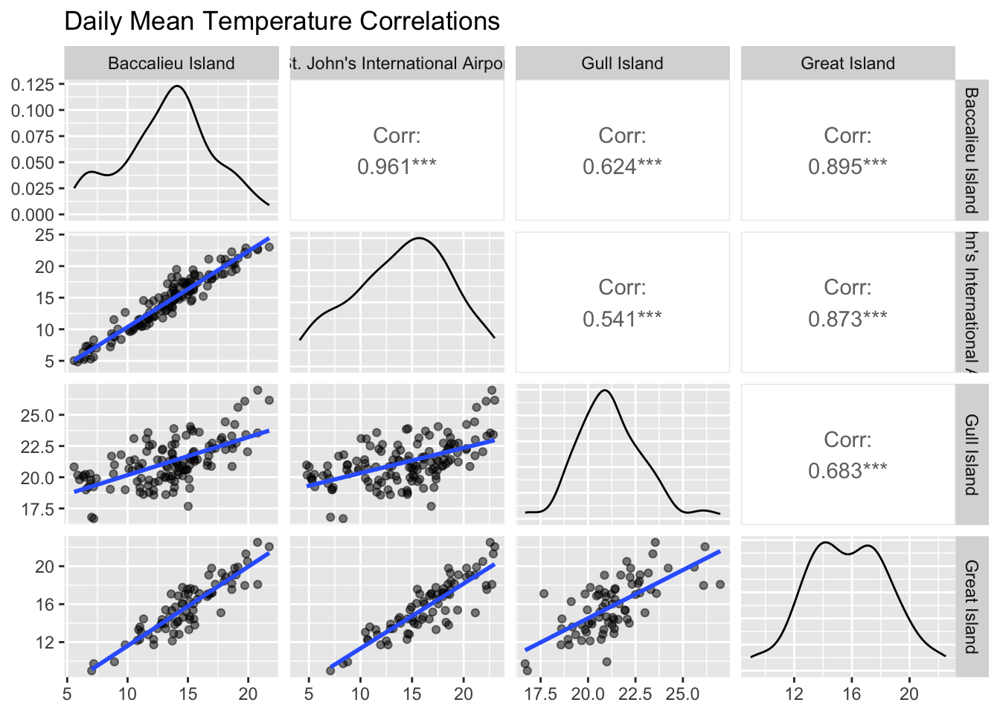
6.3 Daily Pressure Correlation Matrix
ggpairs(
daily_pressure,
columns = 2:ncol(daily_pressure),
title = "Daily Mean Pressure Correlations",
lower = list(continuous = ggpairs_lower_function),
diag = list(continuous = ggpairs_diagonal_function)
)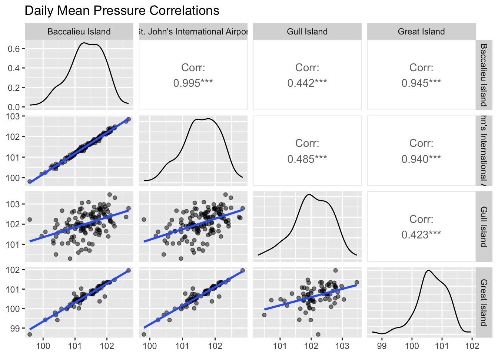
6.4 Daily Wind Correlation Matrix
daily_wind_no_gull = daily_wind %>%
select(-`Gull Island`)
ggpairs(
daily_wind_no_gull,
columns = 2:ncol(daily_wind_no_gull),
title = "Daily Mean Wind Correlations",
lower = list(continuous = ggpairs_lower_function),
diag = list(continuous = ggpairs_diagonal_function)
)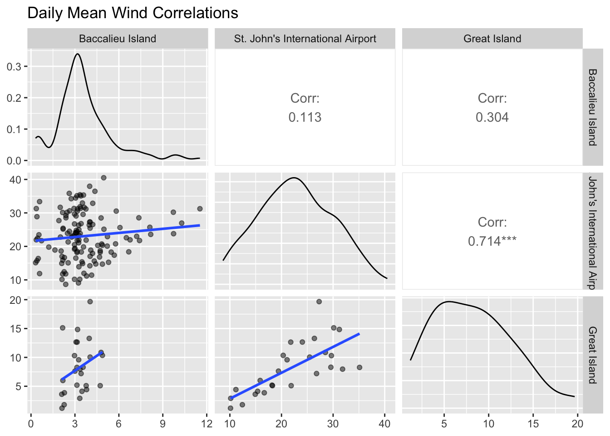
Wind speed showed weaker agreement among stations than temperature, pressure, humidity, or dew point. Gull Island was excluded because the wind impeller failed for the full deployment. These preliminary results suggest that airport wind speed may not be a reliable substitute for island-level wind measurements, although this should be evaluated more, formally.
6.5 Daily Humidity Correlation Matrix
ggpairs(
daily_humidity,
columns = 2:ncol(daily_humidity),
title = "Daily Mean Humidity Correlations",
lower = list(continuous = ggpairs_lower_function),
diag = list(continuous = ggpairs_diagonal_function)
)6.6 Daily Dew Point Correlation Matrix
ggpairs(
daily_dew_point,
columns = 2:ncol(daily_dew_point),
title = "Daily Mean Dew Point Correlations",
lower = list(continuous = ggpairs_lower_function),
diag = list(continuous = ggpairs_diagonal_function)
)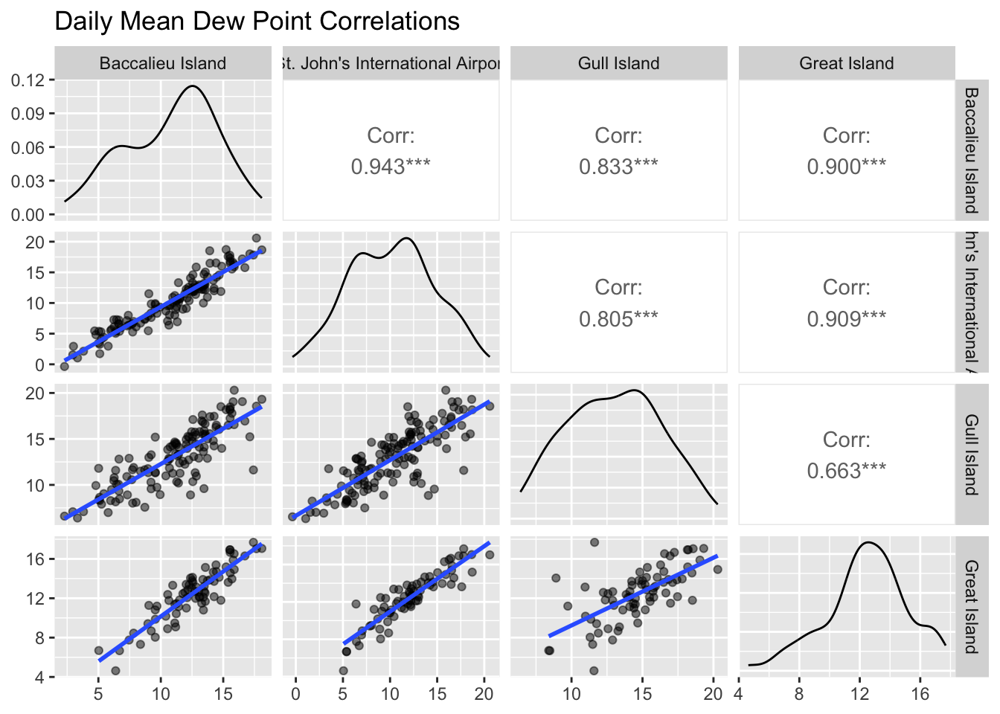
7 Weather Data for Building Models
cleaned_airport_weather_data = airport_weather_data %>%
mutate(datetime = as_datetime(Date.Time..LST., format = "%Y-%m-%d %H:%M"),
datetime = force_tz(datetime, tzone = "America/St_Johns"),
datetime = round_date(datetime, "hour")) %>%
select(datetime,Weather, Visibility..km., Temp...C., Stn.Press..kPa., Rel.Hum...., Hmdx, Dew.Point.Temp...C., Wind.Spd..km.h., Wind.Dir..10s.deg., Wind.Chill) %>%
rename(
weather = Weather,
visibility = Visibility..km.,
temperature = Temp...C.,
station_pressure = Stn.Press..kPa.,
relative_humidity = Rel.Hum....,
humidex = Hmdx,
dew_point = Dew.Point.Temp...C.,
wind_speed = Wind.Spd..km.h.,
wind_direction = Wind.Dir..10s.deg.,
wind_chill = Wind.Chill
) %>%
mutate(barometric_pressure = (station_pressure)*((1-(0.0065*140.50)/(temperature+273.15+(0.0065*140.50)))^-5.257)) %>%
relocate(barometric_pressure, .before = relative_humidity) %>%
mutate(weather = tolower(weather))8 Linear Models for Island Temperature
8.1 Baccalieu Island Temperature As Predicted by St. John’s International Airport
baccalieu_temperature_model = lm(
`Baccalieu Island` ~ `St. John's International Airport`,
data = daily_temperature
)
summary(baccalieu_temperature_model)
Call:
lm(formula = `Baccalieu Island` ~ `St. John's International Airport`,
data = daily_temperature)
Residuals:
Min 1Q Median 3Q Max
-3.2116 -0.6519 0.2598 0.6736 2.2772
Coefficients:
Estimate Std. Error t value Pr(>|t|)
(Intercept) 2.28594 0.29020 7.877 1.09e-12 ***
`St. John's International Airport` 0.76961 0.01929 39.893 < 2e-16 ***
---
Signif. codes: 0 '***' 0.001 '**' 0.01 '*' 0.05 '.' 0.1 ' ' 1
Residual standard error: 1.019 on 132 degrees of freedom
(8 observations deleted due to missingness)
Multiple R-squared: 0.9234, Adjusted R-squared: 0.9228
F-statistic: 1591 on 1 and 132 DF, p-value: < 2.2e-16par(mfrow = c(2, 2))
plot(baccalieu_temperature_model)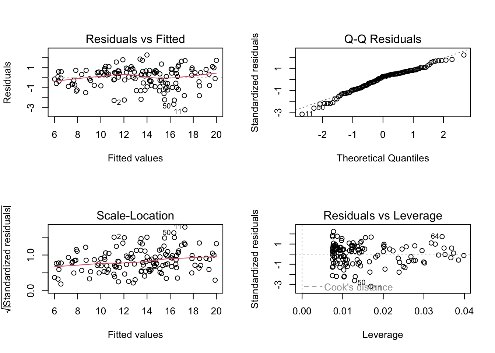
par(mfrow = c(1, 1))8.2 Gull Island Temperature As Predicted by St. John’s International Airport
gull_temperature_model = lm(
`Gull Island` ~ `St. John's International Airport`,
data = daily_temperature
)
summary(gull_temperature_model)
Call:
lm(formula = `Gull Island` ~ `St. John's International Airport`,
data = daily_temperature)
Residuals:
Min 1Q Median 3Q Max
-4.0425 -0.9411 0.0556 0.8705 4.0639
Coefficients:
Estimate Std. Error t value Pr(>|t|)
(Intercept) 18.30928 0.40680 45.008 < 2e-16 ***
`St. John's International Airport` 0.20217 0.02723 7.424 1.21e-11 ***
---
Signif. codes: 0 '***' 0.001 '**' 0.01 '*' 0.05 '.' 0.1 ' ' 1
Residual standard error: 1.477 on 133 degrees of freedom
(7 observations deleted due to missingness)
Multiple R-squared: 0.293, Adjusted R-squared: 0.2877
F-statistic: 55.12 on 1 and 133 DF, p-value: 1.214e-11par(mfrow = c(2, 2))
plot(gull_temperature_model)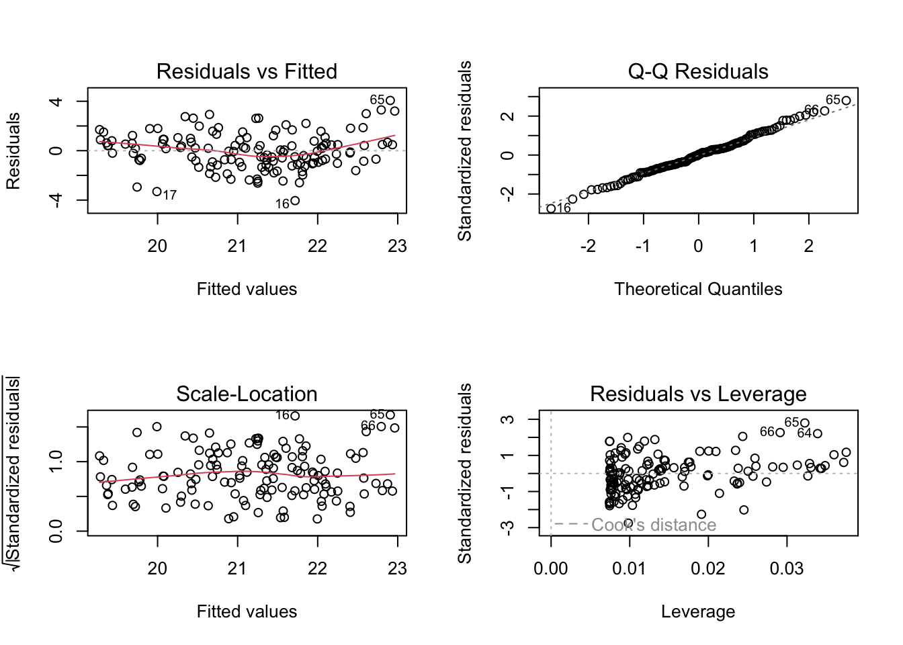
par(mfrow = c(1, 1))8.3 Great Island Temperature as Predicted by St. John’s International Airport
great_temperature_model = lm(
`Great Island` ~ `St. John's International Airport`,
data = daily_temperature
)
summary(great_temperature_model)
Call:
lm(formula = `Great Island` ~ `St. John's International Airport`,
data = daily_temperature)
Residuals:
Min 1Q Median 3Q Max
-3.8417 -0.9320 0.3200 0.9751 2.6315
Coefficients:
Estimate Std. Error t value Pr(>|t|)
(Intercept) 4.51333 0.75461 5.981 7.54e-08 ***
`St. John's International Airport` 0.68253 0.04471 15.265 < 2e-16 ***
---
Signif. codes: 0 '***' 0.001 '**' 0.01 '*' 0.05 '.' 0.1 ' ' 1
Residual standard error: 1.402 on 73 degrees of freedom
(67 observations deleted due to missingness)
Multiple R-squared: 0.7615, Adjusted R-squared: 0.7582
F-statistic: 233 on 1 and 73 DF, p-value: < 2.2e-16par(mfrow = c(2, 2))
plot(great_temperature_model)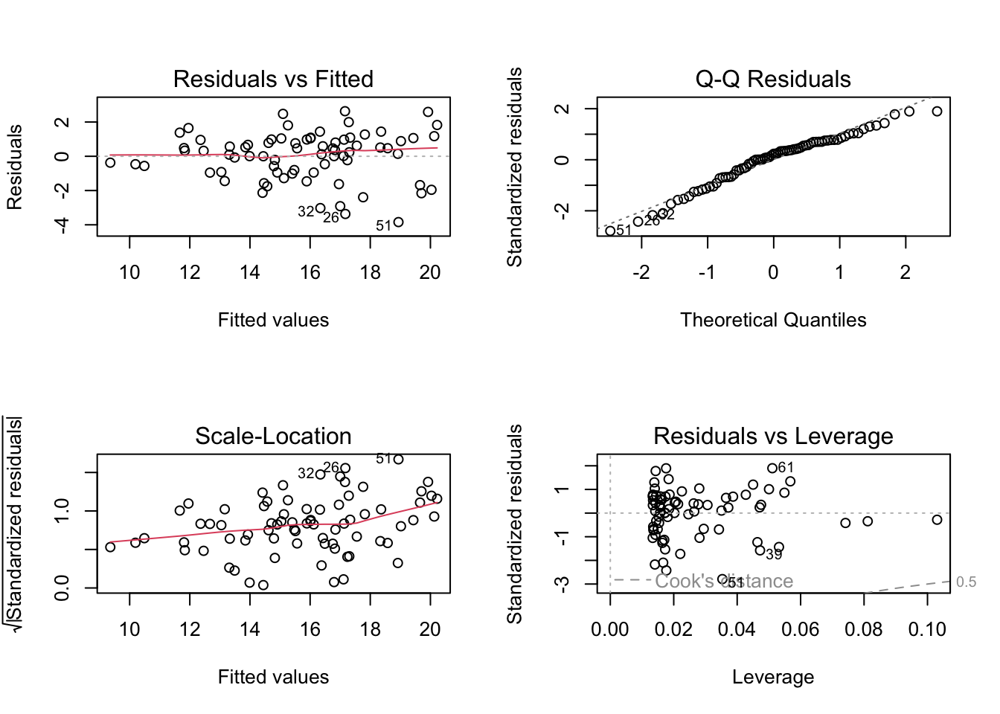
par(mfrow = c(1, 1))9 Linear Models for Island Pressure
9.1 Baccalieu Island Pressure As Predicted by St. John’s International Airport
baccalieu_pressure_model = lm(
`Baccalieu Island` ~ `St. John's International Airport`,
data = daily_pressure
)
summary(baccalieu_pressure_model)
Call:
lm(formula = `Baccalieu Island` ~ `St. John's International Airport`,
data = daily_pressure)
Residuals:
Min 1Q Median 3Q Max
-0.137190 -0.029024 0.002365 0.031924 0.155949
Coefficients:
Estimate Std. Error t value Pr(>|t|)
(Intercept) 1.221088 0.846075 1.443 0.151
`St. John's International Airport` 0.986167 0.008333 118.346 <2e-16 ***
---
Signif. codes: 0 '***' 0.001 '**' 0.01 '*' 0.05 '.' 0.1 ' ' 1
Residual standard error: 0.05448 on 132 degrees of freedom
(8 observations deleted due to missingness)
Multiple R-squared: 0.9907, Adjusted R-squared: 0.9906
F-statistic: 1.401e+04 on 1 and 132 DF, p-value: < 2.2e-16par(mfrow = c(2, 2))
plot(baccalieu_pressure_model)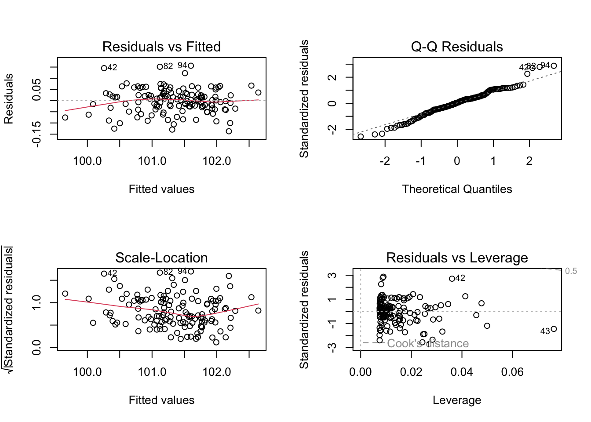
par(mfrow = c(1, 1))9.2 Gull Island Pressure As Predicted by St. John’s International Airport
gull_pressure_model = lm(
`Gull Island` ~ `St. John's International Airport`,
data = daily_pressure
)
summary(gull_pressure_model)
Call:
lm(formula = `Gull Island` ~ `St. John's International Airport`,
data = daily_pressure)
Residuals:
Min 1Q Median 3Q Max
-1.4367 -0.3320 0.0388 0.4078 1.1067
Coefficients:
Estimate Std. Error t value Pr(>|t|)
(Intercept) 49.08244 8.29215 5.919 2.60e-08 ***
`St. John's International Airport` 0.52144 0.08164 6.387 2.61e-09 ***
---
Signif. codes: 0 '***' 0.001 '**' 0.01 '*' 0.05 '.' 0.1 ' ' 1
Residual standard error: 0.5396 on 133 degrees of freedom
(7 observations deleted due to missingness)
Multiple R-squared: 0.2347, Adjusted R-squared: 0.229
F-statistic: 40.8 on 1 and 133 DF, p-value: 2.613e-09par(mfrow = c(2, 2))
plot(gull_pressure_model)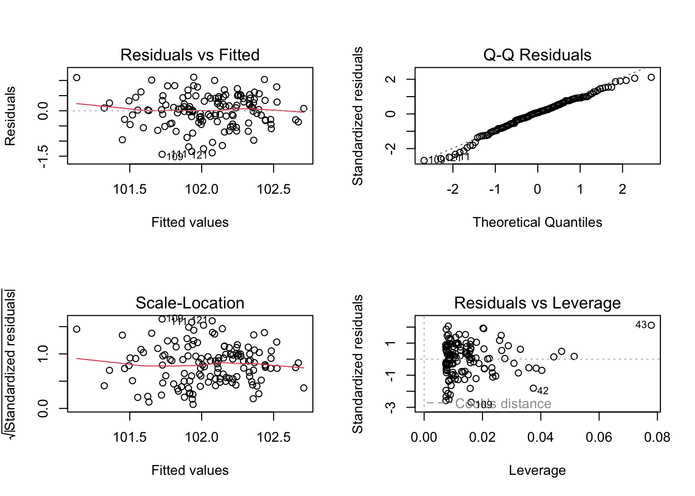
par(mfrow = c(1, 1))9.3 Great Island Pressure as Predicted by St. John’s International Airport
great_pressure_model = lm(
`Great Island` ~ `St. John's International Airport`,
data = daily_pressure
)
summary(great_pressure_model)
Call:
lm(formula = `Great Island` ~ `St. John's International Airport`,
data = daily_pressure)
Residuals:
Min 1Q Median 3Q Max
-0.64272 -0.04309 0.02182 0.06879 0.57298
Coefficients:
Estimate Std. Error t value Pr(>|t|)
(Intercept) 3.19277 4.15049 0.769 0.444
`St. John's International Airport` 0.95995 0.04088 23.483 <2e-16 ***
---
Signif. codes: 0 '***' 0.001 '**' 0.01 '*' 0.05 '.' 0.1 ' ' 1
Residual standard error: 0.1836 on 73 degrees of freedom
(67 observations deleted due to missingness)
Multiple R-squared: 0.8831, Adjusted R-squared: 0.8815
F-statistic: 551.5 on 1 and 73 DF, p-value: < 2.2e-16par(mfrow = c(2, 2))
plot(great_pressure_model)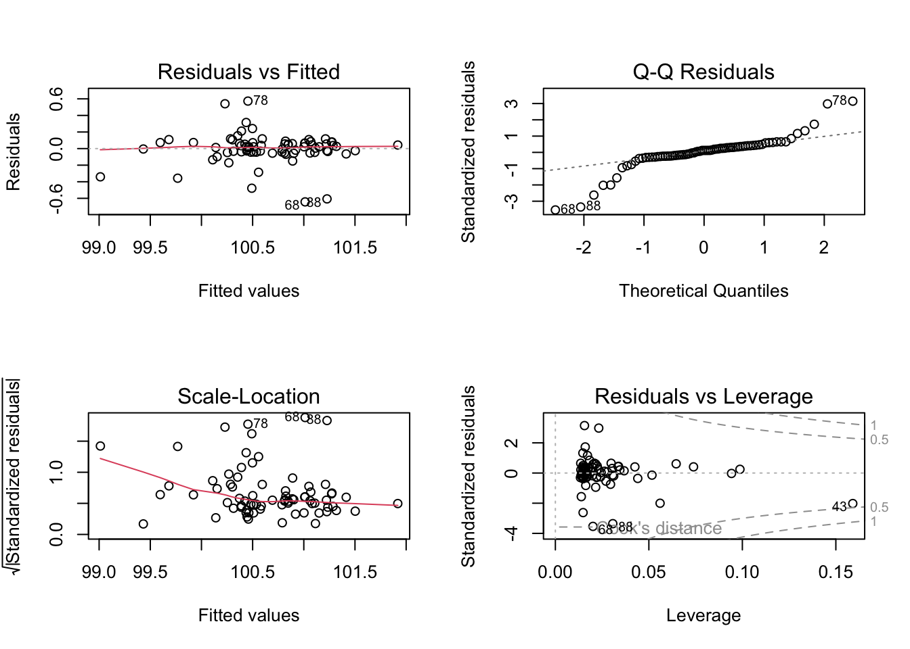
par(mfrow = c(1, 1))10 Linear Models for Island Wind Speed
10.1 Baccalieu Island Wind Speed As Predicted by St. John’s International Airport
baccalieu_wind_model = lm(
`Baccalieu Island` ~ `St. John's International Airport`,
data = daily_wind
)
summary(baccalieu_wind_model)
Call:
lm(formula = `Baccalieu Island` ~ `St. John's International Airport`,
data = daily_wind)
Residuals:
Min 1Q Median 3Q Max
-3.5150 -1.0341 -0.3787 0.7295 7.6614
Coefficients:
Estimate Std. Error t value Pr(>|t|)
(Intercept) 2.89151 0.57932 4.991 1.86e-06 ***
`St. John's International Airport` 0.03143 0.02402 1.308 0.193
---
Signif. codes: 0 '***' 0.001 '**' 0.01 '*' 0.05 '.' 0.1 ' ' 1
Residual standard error: 1.965 on 132 degrees of freedom
(8 observations deleted due to missingness)
Multiple R-squared: 0.0128, Adjusted R-squared: 0.00532
F-statistic: 1.711 on 1 and 132 DF, p-value: 0.1931par(mfrow = c(2, 2))
plot(baccalieu_wind_model)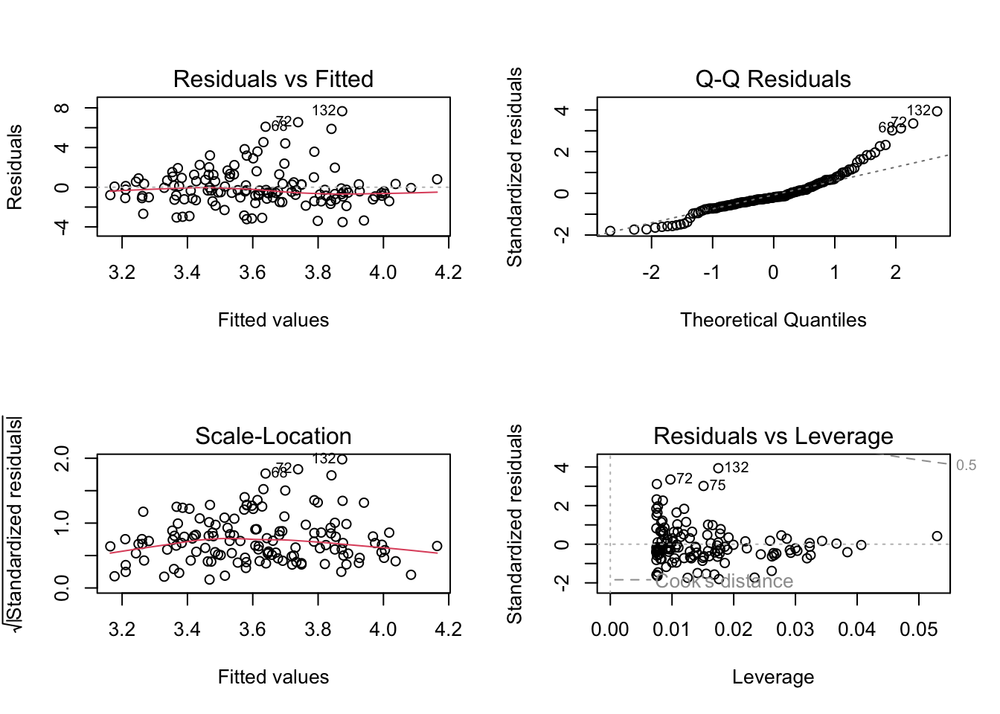
par(mfrow = c(1, 1))10.2 Great Island Wind Speed as Predicted by St. John’s International Airport
great_wind_model = lm(
`Great Island` ~ `St. John's International Airport`,
data = daily_wind
)
summary(great_wind_model)
Call:
lm(formula = `Great Island` ~ `St. John's International Airport`,
data = daily_wind)
Residuals:
Min 1Q Median 3Q Max
-5.8500 -1.8375 -0.2846 2.1209 9.0587
Coefficients:
Estimate Std. Error t value Pr(>|t|)
(Intercept) -1.63368 2.02949 -0.805 0.428
`St. John's International Airport` 0.44836 0.08787 5.103 2.86e-05 ***
---
Signif. codes: 0 '***' 0.001 '**' 0.01 '*' 0.05 '.' 0.1 ' ' 1
Residual standard error: 3.233 on 25 degrees of freedom
(115 observations deleted due to missingness)
Multiple R-squared: 0.5102, Adjusted R-squared: 0.4906
F-statistic: 26.04 on 1 and 25 DF, p-value: 2.857e-05par(mfrow = c(2, 2))
plot(great_wind_model)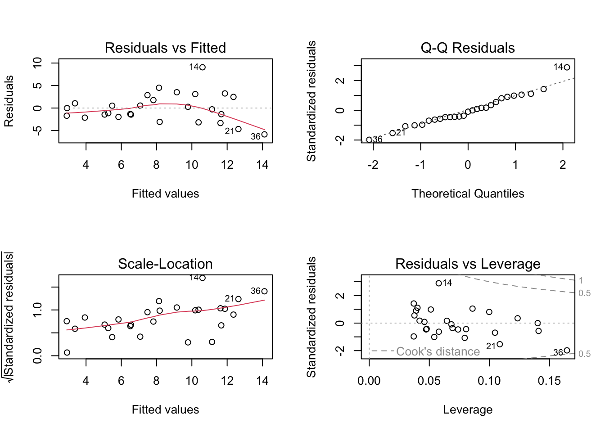
par(mfrow = c(1, 1))11 Linear Models for Island Humidity
11.1 Baccalieu Island Humidity As Predicted by St. John’s International Airport
baccalieu_humidity_model = lm(
`Baccalieu Island` ~ `St. John's International Airport`,
data = daily_humidity
)
summary(baccalieu_humidity_model)
Call:
lm(formula = `Baccalieu Island` ~ `St. John's International Airport`,
data = daily_humidity)
Residuals:
Min 1Q Median 3Q Max
-14.6420 -3.1293 0.1463 3.4975 14.4327
Coefficients:
Estimate Std. Error t value Pr(>|t|)
(Intercept) 25.65571 2.99679 8.561 2.51e-14 ***
`St. John's International Airport` 0.76682 0.03746 20.469 < 2e-16 ***
---
Signif. codes: 0 '***' 0.001 '**' 0.01 '*' 0.05 '.' 0.1 ' ' 1
Residual standard error: 5.148 on 132 degrees of freedom
(8 observations deleted due to missingness)
Multiple R-squared: 0.7604, Adjusted R-squared: 0.7586
F-statistic: 419 on 1 and 132 DF, p-value: < 2.2e-16par(mfrow = c(2, 2))
plot(baccalieu_humidity_model)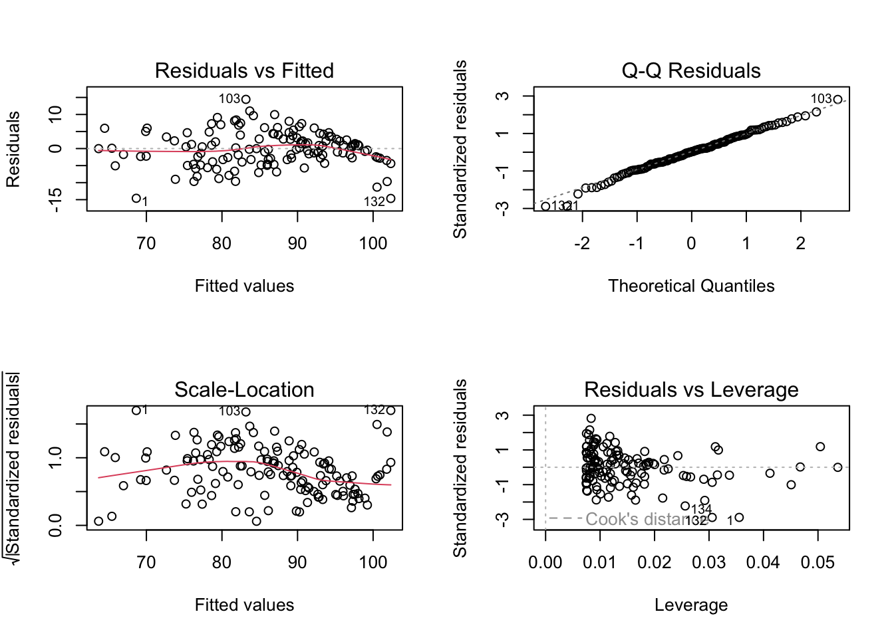
par(mfrow = c(1, 1))11.2 Gull Island Humidity As Predicted by St. John’s International Airport
gull_humidity_model = lm(
`Gull Island` ~ `St. John's International Airport`,
data = daily_humidity
)
summary(gull_humidity_model)
Call:
lm(formula = `Gull Island` ~ `St. John's International Airport`,
data = daily_humidity)
Residuals:
Min 1Q Median 3Q Max
-18.696 -8.913 0.912 8.151 20.159
Coefficients:
Estimate Std. Error t value Pr(>|t|)
(Intercept) 58.77851 5.92129 9.927 <2e-16 ***
`St. John's International Airport` 0.01879 0.07299 0.257 0.797
---
Signif. codes: 0 '***' 0.001 '**' 0.01 '*' 0.05 '.' 0.1 ' ' 1
Residual standard error: 10.09 on 133 degrees of freedom
(7 observations deleted due to missingness)
Multiple R-squared: 0.0004982, Adjusted R-squared: -0.007017
F-statistic: 0.06629 on 1 and 133 DF, p-value: 0.7972par(mfrow = c(2, 2))
plot(gull_humidity_model)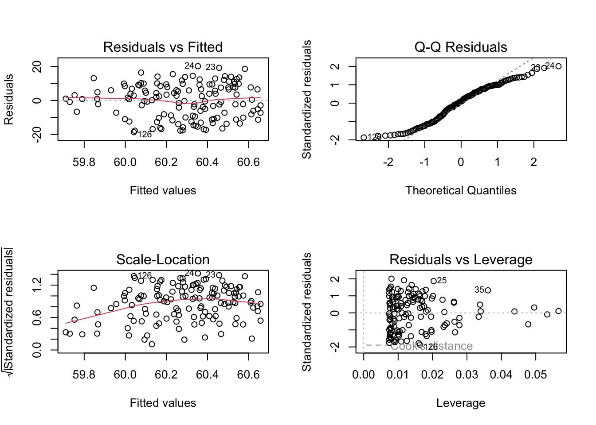
par(mfrow = c(1, 1))11.3 Great Island Humidity as Predicted by St. John’s International Airport
great_humidity_model = lm(
`Great Island` ~ `St. John's International Airport`,
data = daily_humidity
)
summary(great_humidity_model)
Call:
lm(formula = `Great Island` ~ `St. John's International Airport`,
data = daily_humidity)
Residuals:
Min 1Q Median 3Q Max
-13.6697 -4.5582 -0.5009 3.4016 19.7387
Coefficients:
Estimate Std. Error t value Pr(>|t|)
(Intercept) 15.08244 4.85973 3.104 0.00272 **
`St. John's International Airport` 0.86947 0.06155 14.126 < 2e-16 ***
---
Signif. codes: 0 '***' 0.001 '**' 0.01 '*' 0.05 '.' 0.1 ' ' 1
Residual standard error: 6.456 on 73 degrees of freedom
(67 observations deleted due to missingness)
Multiple R-squared: 0.7322, Adjusted R-squared: 0.7285
F-statistic: 199.5 on 1 and 73 DF, p-value: < 2.2e-16par(mfrow = c(2, 2))
plot(great_humidity_model)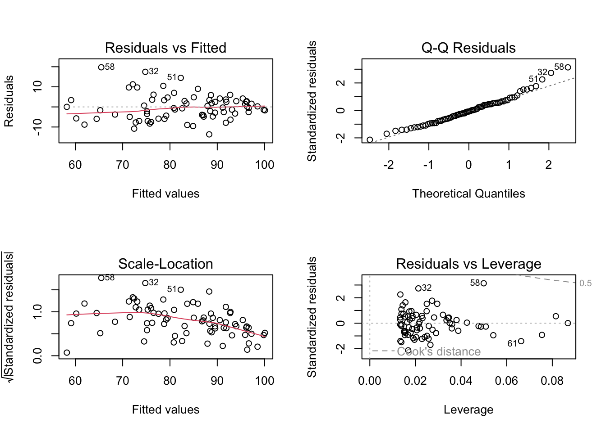
par(mfrow = c(1, 1))12 Linear Models for Island Dew Point
12.1 Baccalieu Island Dew Point As Predicted by St. John’s International Airport
baccalieu_dew_point_model = lm(
`Baccalieu Island` ~ `St. John's International Airport`,
data = daily_dew_point
)
summary(baccalieu_dew_point_model)
Call:
lm(formula = `Baccalieu Island` ~ `St. John's International Airport`,
data = daily_dew_point)
Residuals:
Min 1Q Median 3Q Max
-3.3269 -0.7700 0.1053 0.6265 3.1278
Coefficients:
Estimate Std. Error t value Pr(>|t|)
(Intercept) 2.7706 0.2701 10.26 <2e-16 ***
`St. John's International Airport` 0.7816 0.0241 32.44 <2e-16 ***
---
Signif. codes: 0 '***' 0.001 '**' 0.01 '*' 0.05 '.' 0.1 ' ' 1
Residual standard error: 1.22 on 132 degrees of freedom
(8 observations deleted due to missingness)
Multiple R-squared: 0.8885, Adjusted R-squared: 0.8877
F-statistic: 1052 on 1 and 132 DF, p-value: < 2.2e-16par(mfrow = c(2, 2))
plot(baccalieu_dew_point_model)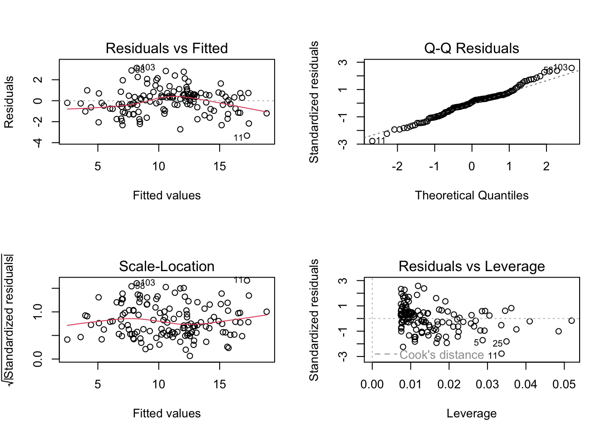
par(mfrow = c(1, 1))12.2 Gull Island Dew Point As Predicted by St. John’s International Airport
gull_dew_point_model = lm(
`Gull Island` ~ `St. John's International Airport`,
data = daily_dew_point
)
summary(gull_dew_point_model)
Call:
lm(formula = `Gull Island` ~ `St. John's International Airport`,
data = daily_dew_point)
Residuals:
Min 1Q Median 3Q Max
-6.2711 -1.1797 0.2025 1.3448 4.6514
Coefficients:
Estimate Std. Error t value Pr(>|t|)
(Intercept) 6.71508 0.43380 15.48 <2e-16 ***
`St. John's International Airport` 0.60191 0.03843 15.66 <2e-16 ***
---
Signif. codes: 0 '***' 0.001 '**' 0.01 '*' 0.05 '.' 0.1 ' ' 1
Residual standard error: 1.94 on 133 degrees of freedom
(7 observations deleted due to missingness)
Multiple R-squared: 0.6485, Adjusted R-squared: 0.6458
F-statistic: 245.4 on 1 and 133 DF, p-value: < 2.2e-16par(mfrow = c(2, 2))
plot(gull_dew_point_model)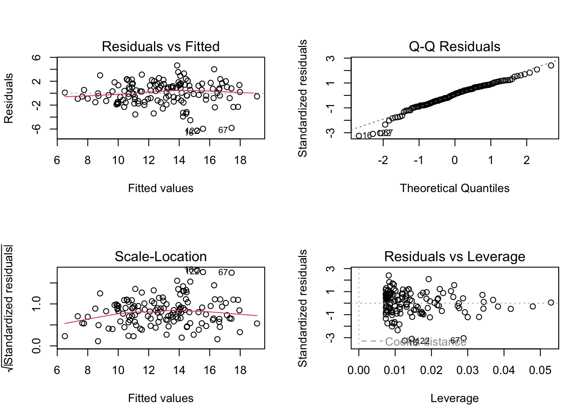
par(mfrow = c(1, 1))12.3 Great Island Dew Point as Predicted by St. John’s International Airport
great_dew_point_model = lm(
`Great Island` ~ `St. John's International Airport`,
data = daily_dew_point
)
summary(great_dew_point_model)
Call:
lm(formula = `Great Island` ~ `St. John's International Airport`,
data = daily_dew_point)
Residuals:
Min 1Q Median 3Q Max
-2.8784 -0.7611 0.0042 0.7335 3.3344
Coefficients:
Estimate Std. Error t value Pr(>|t|)
(Intercept) 3.96724 0.47509 8.351 3.09e-12 ***
`St. John's International Airport` 0.69991 0.03763 18.601 < 2e-16 ***
---
Signif. codes: 0 '***' 0.001 '**' 0.01 '*' 0.05 '.' 0.1 ' ' 1
Residual standard error: 1.139 on 73 degrees of freedom
(67 observations deleted due to missingness)
Multiple R-squared: 0.8258, Adjusted R-squared: 0.8234
F-statistic: 346 on 1 and 73 DF, p-value: < 2.2e-16par(mfrow = c(2, 2))
plot(great_dew_point_model)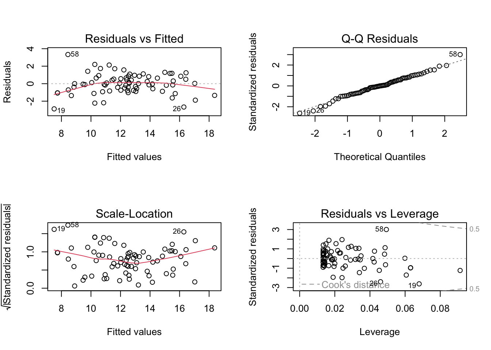
par(mfrow = c(1, 1))13 Fog Prediction Models
13.1 Fog Presence Data
fog_data = cleaned_airport_weather_data %>%
arrange(datetime) %>%
filter(datetime >= "2025-06-10" & datetime <= "2025-10-28") %>%
mutate(fog = str_detect(weather, "fog"),
fog = replace_na(fog, FALSE),
dew_point_depression = temperature - dew_point,
barometric_pressure_12_hour_lag = lag(barometric_pressure, 12),
barometric_pressure_12_hour_trend = barometric_pressure - barometric_pressure_12_hour_lag,
date = as_date(datetime),
fog_next_3h = lead(fog, 3)) %>%
left_join(suntimes, by = "date") %>%
filter(datetime >= sunset | datetime <= sunrise)13.2 Binomial Distribution Model
binomial_fog_model = glm(
fog ~ dew_point_depression +
relative_humidity +
visibility +
barometric_pressure_12_hour_trend +
wind_speed,
family = binomial,
data = fog_data
)Warning: glm.fit: fitted probabilities numerically 0 or 1 occurredsummary(binomial_fog_model)
Call:
glm(formula = fog ~ dew_point_depression + relative_humidity +
visibility + barometric_pressure_12_hour_trend + wind_speed,
family = binomial, data = fog_data)
Coefficients:
Estimate Std. Error z value Pr(>|z|)
(Intercept) 51.01429 153.27709 0.333 0.739267
dew_point_depression -5.38111 9.88103 -0.545 0.586035
relative_humidity -0.40713 1.52767 -0.267 0.789850
visibility -1.03807 0.27506 -3.774 0.000161 ***
barometric_pressure_12_hour_trend 1.58248 1.09722 1.442 0.149229
wind_speed 0.06334 0.04390 1.443 0.149038
---
Signif. codes: 0 '***' 0.001 '**' 0.01 '*' 0.05 '.' 0.1 ' ' 1
(Dispersion parameter for binomial family taken to be 1)
Null deviance: 1212.632 on 1435 degrees of freedom
Residual deviance: 29.971 on 1430 degrees of freedom
(10 observations deleted due to missingness)
AIC: 41.971
Number of Fisher Scoring iterations: 13par(mfrow = c(2, 2))
plot(binomial_fog_model)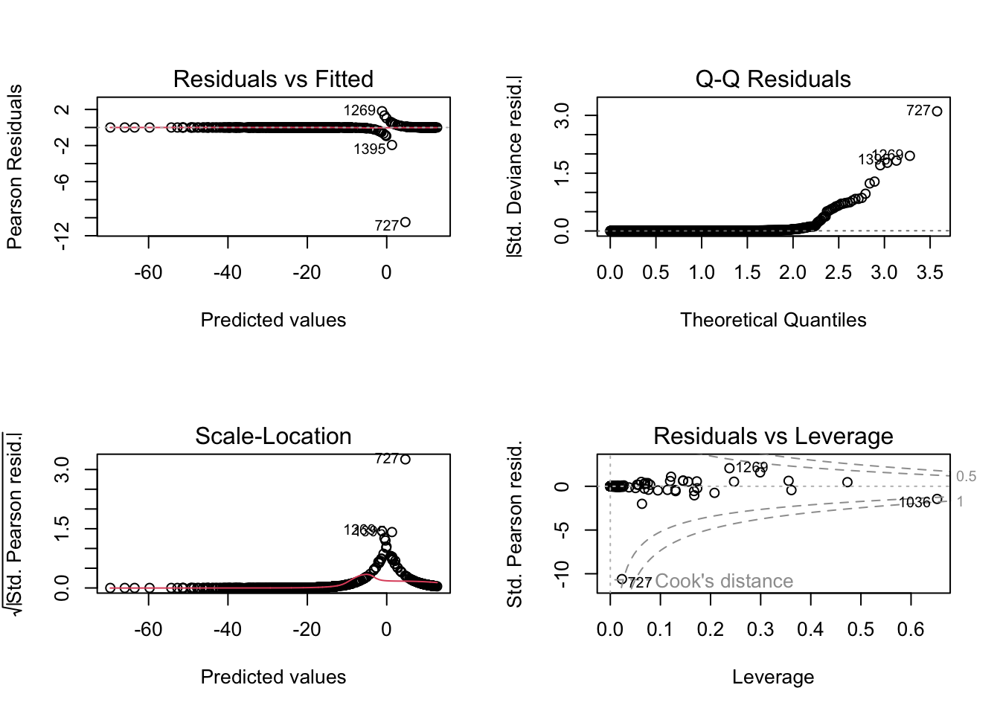
par(mfrow = c(1, 1))14 Evaluation of St. John’s International Airport Data For Island Approximation
14.1 Evaluation Function
evaluate_airport_prediction = function(data, island_name) {
model_data = data %>%
select(
date,
island_value = all_of(island_name),
airport_value = `St. John's International Airport`
) %>%
drop_na()
model = lm(island_value ~ airport_value, data = model_data)
tibble(
island = island_name,
n_days = nrow(model_data),
r = cor(model_data$island_value, model_data$airport_value),
r_squared = summary(model)$r.squared,
root_mean_sqaure_error = sqrt(mean(resid(model)^2)),
mean_absolute_error = mean(abs(resid(model))),
bias_airport_minus_island = mean(model_data$airport_value - model_data$island_value),
intercept = coef(model)[1],
slope = coef(model)[2]
)
}14.2 Function to Plot Airport Against Island Data
plot_airport_prediction = function(data, island_name, y_label) {
data %>%
select(
date,
island_value = all_of(island_name),
airport_value = "St. John's International Airport",
) %>%
drop_na() %>%
ggplot(aes(x = airport_value, y = island_value)) +
geom_point(aes(colour = date), alpha = .7) +
geom_smooth(method = "lm", se = TRUE) +
labs(
x = "St. John's International Airport",
y = y_label,
color = "Date"
)
}14.3 Creation of Evaluation Data Frames
14.3.1 Temperature
temperature_prediction_results = bind_rows(
evaluate_airport_prediction(daily_temperature, "Baccalieu Island"),
evaluate_airport_prediction(daily_temperature, "Gull Island"),
evaluate_airport_prediction(daily_temperature, "Great Island")
)14.3.2 Pressure
pressure_prediction_results = bind_rows(
evaluate_airport_prediction(daily_pressure, "Baccalieu Island"),
evaluate_airport_prediction(daily_pressure, "Gull Island"),
evaluate_airport_prediction(daily_pressure, "Great Island")
)14.3.3 Wind
wind_prediction_results = bind_rows(
evaluate_airport_prediction(daily_wind, "Baccalieu Island"),
evaluate_airport_prediction(daily_wind, "Great Island")
)14.3.4 Humidity
humidity_prediction_results = bind_rows(
evaluate_airport_prediction(daily_humidity, "Baccalieu Island"),
evaluate_airport_prediction(daily_humidity, "Gull Island"),
evaluate_airport_prediction(daily_humidity, "Great Island")
)14.3.5 Dew Point
dew_point_prediction_results = bind_rows(
evaluate_airport_prediction(daily_dew_point, "Baccalieu Island"),
evaluate_airport_prediction(daily_dew_point, "Gull Island"),
evaluate_airport_prediction(daily_dew_point, "Great Island")
)14.4 Combination of Evaluation Data Frames
airport_prediction_results = bind_rows(
temperature_prediction_results %>%
mutate(variable = "temperature"),
pressure_prediction_results %>%
mutate(variable = "barometric_pressure"),
wind_prediction_results %>%
mutate(variable = "wind_speed"),
humidity_prediction_results %>%
mutate(variable = "humidity"),
dew_point_prediction_results %>%
mutate(variable = "dew_point")
) %>%
relocate(c(variable, n_days, slope, intercept), .after = island)15 Prediction of Fog on Islands From Light Data
15.1 Nightly Summaries for Island Light Data
nightly_light = light_data %>%
left_join(suntimes, by = c("date")) %>%
select(-c(lat, lon, voltage, temp)) %>%
filter(sunelev_deg <= -12) %>%
group_by(site, nightdate) %>%
summarise(
mean_light_msas = mean(light_reading_MSAS, na.rm = TRUE),
sd_light_msas = sd(light_reading_MSAS, na.rm = TRUE),
median_light_msas = median(light_reading_MSAS, na.rm = TRUE),
min_light_msas = min(light_reading_MSAS, na.rm = TRUE),
max_light_msas = max(light_reading_MSAS, na.rm = TRUE),
mean_moon_elevation = mean(moonelev_deg, na.rm = TRUE),
mean_moon_illumination = mean(moonillumination, na.rm = TRUE),
n_light_records = n(),
.groups = "drop"
)15.2 Fog Presence Data
As per the government of Canada’s website of frequently asked questions about the historical weather data which can be found here the missing data in the weather column is when there wasn’t anything to report, thus the observations in which there are missing values can be treated as FALSE for the logical column of if fog was present.
nightly_airport_weather = cleaned_airport_weather_data %>%
arrange(datetime) %>%
filter(datetime >= "2025-06-10" & datetime <= "2025-10-28") %>%
mutate(nightdate = nightdater(datetime),
fog = str_detect(weather, "fog"),
fog = replace_na(fog, FALSE),
dew_point_depression = temperature - dew_point,
date = as_date(datetime)) %>%
left_join(suntimes, by = "date") %>%
filter(datetime >= sunset | datetime <= sunrise) %>%
group_by(nightdate) %>%
summarise(
fog_night = any(fog),
mean_temperature = mean(temperature, na.rm = TRUE),
mean_relative_humidity = mean(relative_humidity, na.rm = TRUE),
mean_visibility = mean(visibility, na.rm = TRUE),
min_visibility = min(visibility, na.rm = TRUE),
mean_dew_point_depression = mean(dew_point_depression, na.rm = TRUE),
min_dew_point_depression = min(dew_point_depression, na.rm = TRUE),
mean_wind_speed = mean(wind_speed, na.rm = TRUE),
mean_barometric_pressure = mean(barometric_pressure, na.rm = TRUE),
.groups = "drop"
)15.3 Fog Light Model Data
fog_light_model_data = nightly_light %>%
left_join(nightly_airport_weather, by = "nightdate")15.4 Fog Light Model
fog_light_model = glm(
fog_night ~ #mean_relative_humidity +
min_visibility +
#mean_dew_point_depression +
#mean_wind_speed +
#mean_barometric_pressure +
mean_light_msas +
mean_light_msas*min_visibility +
#mean_moon_illumination +
site,
family = "binomial",
data = fog_light_model_data
)Warning: glm.fit: algorithm did not convergeWarning: glm.fit: fitted probabilities numerically 0 or 1 occurredsummary(fog_light_model)
Call:
glm(formula = fog_night ~ min_visibility + mean_light_msas +
mean_light_msas * min_visibility + site, family = "binomial",
data = fog_light_model_data)
Coefficients:
Estimate Std. Error z value Pr(>|z|)
(Intercept) 2244.998 376266.674 0.006 0.995
min_visibility -155.588 29635.643 -0.005 0.996
mean_light_msas -94.995 16287.452 -0.006 0.995
siteGreat Island, Witless Bay 49.006 10122.111 0.005 0.996
min_visibility:mean_light_msas 6.139 1265.609 0.005 0.996
(Dispersion parameter for binomial family taken to be 1)
Null deviance: 2.2922e+02 on 199 degrees of freedom
Residual deviance: 9.5417e-08 on 195 degrees of freedom
(17 observations deleted due to missingness)
AIC: 10
Number of Fisher Scoring iterations: 25par(mfrow = c(2, 2))
plot(fog_light_model)Warning in sqrt(crit * p * (1 - hh)/hh): NaNs producedWarning in sqrt(crit * p * (1 - hh)/hh): NaNs produced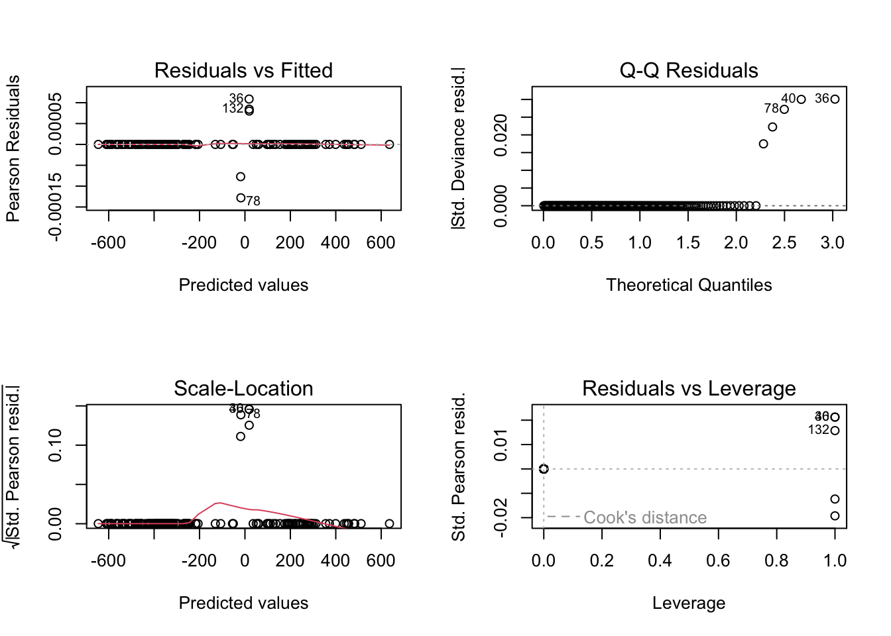
par(mfrow = c(1, 1))